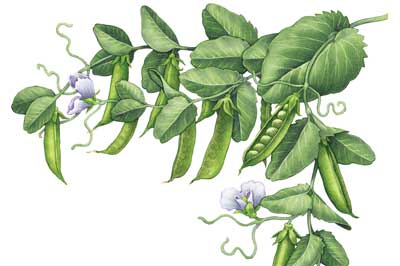

All About Growing Peas
Plant peas in mid-spring, when the soil is still cool. The plants grow best in temperatures between 55 and 75 degrees, and young seedlings even tolerate frost. Bacteria growing on pea roots can produce most of the nitrogen the plants need when the crop is grown in cool, moist soil with a pH between 6.5 and 7.0.
By Barbara Pleasant
February/March 2009
Types of Peas to Try
Vine length varies from one variety to another, and long-vined peas need a taller trellis than compact varieties. Both compact and long-vined varieties are available in the following four types, which vary in pod and seed characteristics. See the Crop at a Glance chart for more information.
Snap peas are eaten whole, and both the crunchy pod and the peas inside taste sweet. Snap peas yield more food per square foot than the other types.
Snow peas produce tender, flat pods that are eaten whole. Snow peas also produce the most tender vine tips for adding to salads or stir-fries.
Shell peas are often called English peas, because many fine varieties were developed in Great Britain in the 18th century. Sweet green peas are shelled from tough, inedible pods.
Soup peas produce hard, starch-filled seeds for drying inside inedible pods. Seed size and color vary with variety.
When to Plant Peas
Sow in spring, about one month before your last frost date. Where summers are cool, additional sowings can be made three weeks apart. Peas produce poorly in hot weather, so an early start is always a wise strategy. In climates with mild winters, a second crop can be sown in late summer for harvesting in late fall.
How to Plant Peas
All peas benefit from a trellis or other support. Install a 6-foot-tall trellis before planting long-vined varieties. Compact varieties can be staked with woody branches or unemployed tomato cages after they sprout, or you can interplant short-vined peas with oats, which serve as a living support.
Prepare a wide planting bed by loosening the soil to at least 10 inches deep while mixing in compost. Do not use fertilizer unless your soil is very poor or low in organic matter. Plant seeds in a double row, with a row of seeds on each side of the trellis. Poke seeds into the prepared site 2 inches apart and 1 inch deep. Thinning is not necessary.
Harvesting and Storing Peas
To avoid mangling the vines, use two hands to harvest peas. When green peas are ripe, harvest them daily, preferably in the morning. Pick snow peas when the pods reach full size and the peas inside are just beginning to swell. For best flavor and yields, allow snap peas to change from flat to plump before picking them. Gather sweet green shell peas when the pods begin to show a waxy sheen, but before their color fades. Immediately refrigerate picked peas to stop the conversion of sugar to starches and maintain the peas’ crisp texture. Promptly blanch and freeze your extra peas.
Soup peas can be left on the vines until the pods dry to tan. After shelling and sorting, allow soup peas to dry at room temperature until they are so hard that they shatter when struck with a hammer. Store in airtight containers in a cool, dry place.
Saving Pea Seeds
Peas are open-pollinated and self-fertile, so saving seeds is a simple matter of allowing a few pods from your best plants to mature until the pods dry to brown. Select the largest seeds, and put them in the freezer for three days to kill any insects that may be hiding inside. Then store in a cool, dry place. Pea seeds will keep for at least three years, and often longer. About 4 ounces of seed is needed to plant a 10-foot double row.
Pest and Disease Prevention Tips for Pea Plants
- Powdery mildew causes white patches to form on leaves and pods, but it is easily prevented by growing resistant varieties. So-called “afila” types, which produce many tendrils but only a few leaves, are naturally resistant to powdery mildew.
- Rotate peas with non-legumes to avoid the buildup of soil-dwelling fungi that can cause roots to rot.
- Pea enation mosaic virus causes distorted new growth, and it is most common in the Northwest and Northeast. Several resistant varieties are available.
Tips for Growing Peas
Team up short and tall pea varieties of the same type by planting a compact variety on the outside of a quadruple row, with a long-vined variety closest to the trellis. The short variety will mature ahead of the taller one while helping to support it.
The easiest way to trellis peas is to let a short-vined variety cling to the stems and leaves of upright cover crops like oats or wheat. Many gardeners also save branches they have pruned from fruit trees or shrubs and use the branches to support compact varieties.
Use peas as edible ornamentals, especially varieties that produce lavender or purple flowers such as ‘Swiss Giant’ snow peas, ‘Blue Podded’ soup peas and ‘Margaret McKee’s Baking Peas.’
Soak pea seeds overnight in water before planting them. This will insure strong germination.
Coat pea seeds with a powdered pea/bean inoculant if you haven’t grown peas in your garden. This will provide bacteria that live on pea roots and produce nitrogen. In subsequent seasons, scatter a spadeful of soil taken from last year’s pea planting site onto your new pea bed. It will contain enough bacteria to help kick-start the nitrogen-fixing process.
Mulch pea plants when they are about 12 inches tall to help keep the soil cool and moist. Uniform soil moisture insures strong, steady growth.
Follow spring peas with carrots or cucumbers to make full use of the growing season.
In the Kitchen
Many peas will be eaten before they ever reach the kitchen, because all peas except for starchy soup peas are great to eat raw. A 50-calorie heaping handful of snap or snow peas provide iron, fiber and one-third of your daily quota of vitamin C. Peas cook fast, so they are great to toss into stir-fried dishes. Snap and snow peas work well as finger foods to dip into salad dressings. Cook dried peas like beans, but pre-soak them for only a few hours before cooking them.
|
 KEITH WARD From compact to long-vined varieties, peas vary greatly in pod and seed characteristics. |
 KEITH WARD Potatoes can be a great addition to any meal. An excellent source of iron, fiber and vitamin C, they work great tossed into your favorite stir-fry or simmered into a soup. They are also delicious when eaten raw. |
|